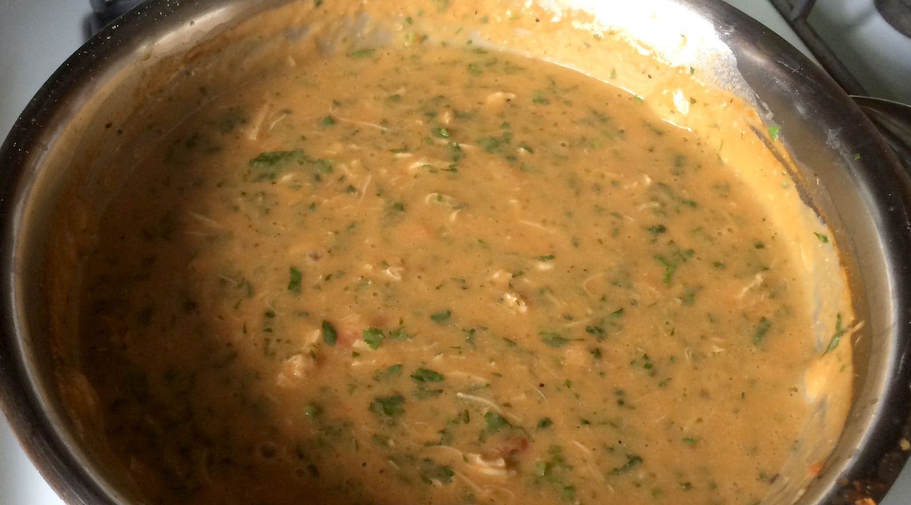

Bobo de Galinha
Bobo de Galinha is a very popular dish made in Brazil but instead of chicken it is usually made with shrimp and served inside a hollowed pumpkin, it looks so delicious and fancy the only problem is that I don’t eat seafood, it simply does not agree with me. I decided to try the recipe using chicken instead and just like that, we created Bobo de Galinha! This is a very tasty, creamy and gluten free dish that will please everyone.
40 mins
Lot of servings
Ingredients
- 1 kg chicken breast
- 3 tbsp oil
- 1 large onion (chopped)
- 1 kg cassava (cooked and chopped)
- 200 ml of coconut milk
- pepper sauce
- salt
- 3 garlics clove
- 4 tomatoes (chopped without skin)
- 1 cup chicken cooking broth
- 2 tbsp palm oil
- ½ cup of chopped cilantro
Instructions
- Season the chicken with salt and saute in oil
- Add garlic, onin, tomatoes and cook over low heat
- Meanwhile, process the cassava with the cooking broth until you get a puree.
- Join the braised, add the coconut milk, increase the heat and stir well.
- Then add palm oil, pepper and cilantro
- Stir a bit more, add more salt (if needed) and put it on a platter.
- Serve with white rice and fried cassava.